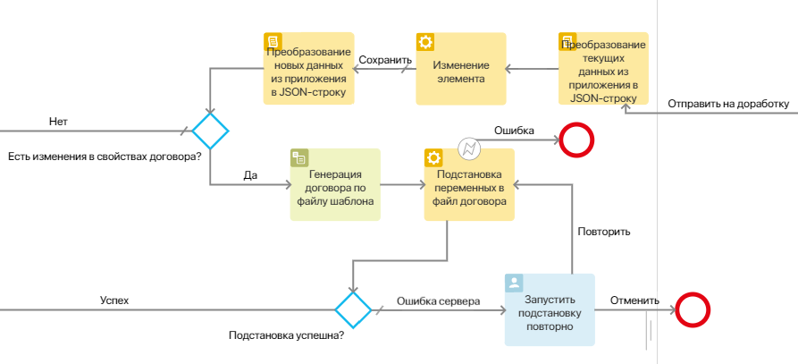
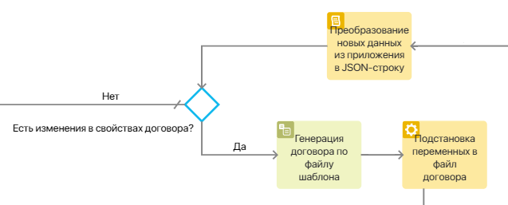
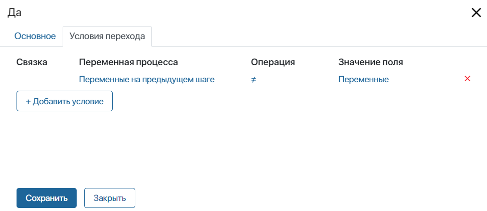
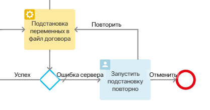
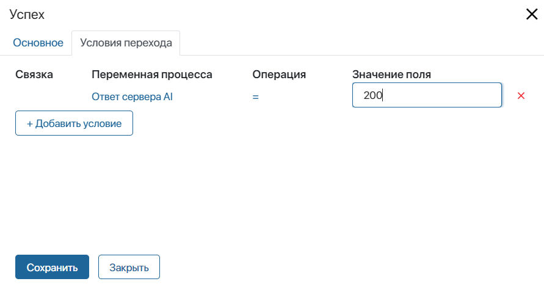
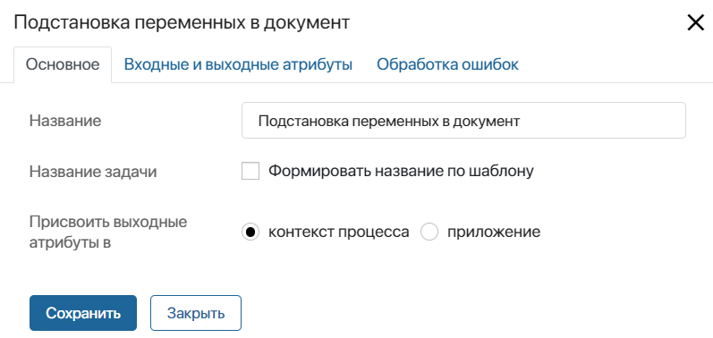
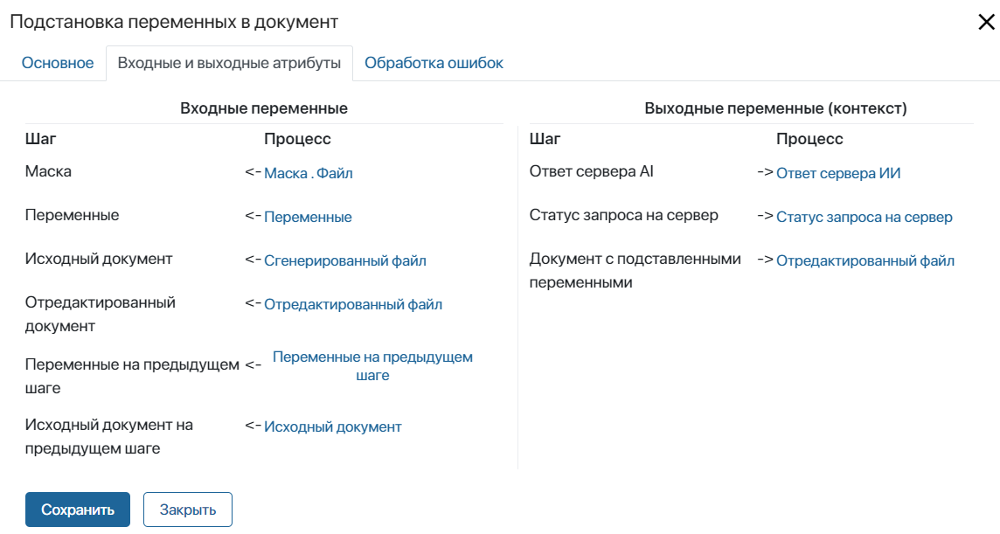
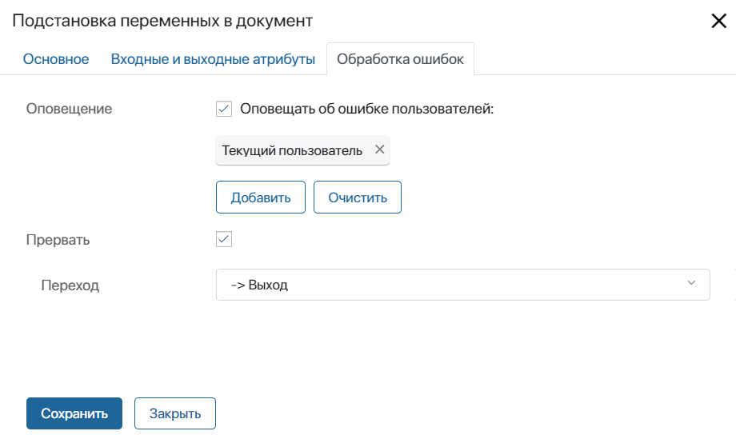

Графический элемент становится доступен в дизайнере бизнес-процессов после подключения Модуля антифрод. Он позволяет с помощью модели искусственного интеллекта внести новые значения переменных в сгенерированный по шаблону и отредактированный документ. Подстановка осуществляется на основе подготовленной маски документа.
начало внимание
Действие доступно только для документов в формате .docx.
конец внимание
Новые значения подставляются в файл, сформированный на основе данных из элемента приложения. Допустим, сотрудник вносит первоначальные сведения в приложение Договоры. В ходе бизнес-процесса по шаблону формируется файл договора, затем сотрудник вручную добавляет в него перечень услуг и отправляет на согласование. Позже может выясниться, что данные договора нужно уточнить, например, со стороны контрагента изменился подписант. Чтобы не пришлось снова генерировать договор и повторно вносить дополнения вручную, в процессе можно предусмотреть изменение данных с помощью блока Подстановка переменных в документ. В этом случае сотрудник может просто исправить информацию в карточке договора. С помощью ИИ новое значение переменной подставится в сформированный файл вместо предыдущего.
Для корректной работы перед настройкой блока нужно:
- создать входные и выходные переменные, которые указываются в настройках блока;
- использовать в процессе другие графические элементы, чтобы подготовить данные для выполнения подстановки на сервере ИИ и учесть обработку ошибок.
Добавить входные и выходные переменные
Для настройки блока нужно заранее создать определённый набор свойств. Они указываются в настройках блока в полях, которые подразделяются на:
- входные атрибуты — в них передаются свойства, содержащие данные для выполнения подстановки;
- выходные атрибуты — сопоставляются со свойствами, в которых сохраняется результат работы блока.
Для упрощения настройки рекомендуем использовать названия, совпадающие с атрибутами из настроек блока.
- Добавление входных переменных.
Добавьте в контекст бизнес-процесса переменные:
- Маска (тип Файлы) — файл маски, соответствующей шаблону, по которому сгенерирован документ. Используется на сервере ИИ для уточнения позиций переменных в документе, а также поиска в тексте функций, циклов и т. п.;
- Переменные (тип Строка) — текущие данные из карточки документа, сериализованные в JSON. Свойство используется на сервере ИИ, чтобы подставить изменившиеся значения в файл. Создание строки в ходе процесса описано в разделе «Сформировать JSON-строку для подстановки новых значений»;
- Исходный документ (тип Файлы) — сгенерированный по шаблону документ, в который подставлены новые значения переменных. Файл используется на сервере ИИ для уточнения позиций переменных в документе, а также поиска в тексте функций, циклов и т. п. Подробнее о его формировании читайте в разделе «Сформировать по шаблону файл с новыми значениями»;
- Отредактированный документ (тип Файлы) — сгенерированный по шаблону и отредактированный пользователем документ в формате .docx, в который подставляются новые значения переменных;
- Переменные на предыдущем шаге (тип Строка) — старые данные из карточки документа, сериализованные в JSON. Свойство используется на сервере ИИ для определения изменений в значениях переменных;
- Исходный документ на предыдущем шаге (тип Файлы) — версия документа в формате .docx до последнего редактирования. Например, если перед подстановкой переменных сотрудник вносил правки в текст, в этом свойстве хранится версия без данных правок. Версия используется на сервере ИИ для уточнения позиций переменных в документе, а также поиска в тексте функций, циклов и т. п.
Обратите внимание, входные переменные нужно заполнить данными до того, как ход процесса дойдёт до шага Подстановка переменных в документ. Это делается с помощью других графических элементов. Например, файл маски можно записать из карточки документа с помощью блока Присваивание.
- Добавление выходных переменных.
Свойства для сопоставления с выходными атрибутами добавляются:
- в контекст бизнес-процесса — если результаты работы блока будут отображаться на формах задач и использоваться для определения дальнейших шагов процесса;
- в контекст приложения — если данные нужно сразу записать в карточку документа. Чтобы свойства нужного приложения были доступны при сопоставлении атрибутов, в настройки процесса добавляется переменная типа Приложение, ссылающаяся на него.
Создайте следующие переменные, в которые запишется информация:
- Ответ сервера AI (тип Строка) — текст ответа, полученного с сервера ИИ. Его может использовать администратор для анализа ошибок, возникших при обработке документа на сервере. Например, чтобы узнать, какая проблема возникла при распознавании значений в JSON-строке с данными документа;
- Статус запроса на сервер (тип Число) — код состояния HTTP, полученный с сервера ИИ. Переменную можно использовать для определения следующего шага процесса в зависимости от успешности подстановки. Подробнее читайте в разделе «Настроить обработку ошибок». Также на основе кода администратор может анализировать возникшие ошибки;
- Документ с подставленными переменными (тип Файлы) — файл обработанного документа, в который подставлены новые значения переменных.
Настроить обязательные шаги в процессе
Разместите блок Подстановка переменных в документ в том месте на схеме процесса, где нужно внести в документ обновлённые значения.
Чтобы блок работал корректно, в ходе процесса нужно:
- Подготовить JSON-строки для сравнения старых и новых данных документа. Они используются на сервере ИИ для добавления новых значений в файл.
- Задать проверку на изменения в значениях документа, чтобы не применять подстановку переменных без необходимости.
- Перед блоком подстановки сформировать версию документа с новыми значениями. Она используется на сервере ИИ для уточнения позиций переменных в файле.
- Учесть в процессе ошибок.
Рассмотрим, какие графические элементы для этого применяются.

Сформировать JSON-строки для подстановки новых значений
При подстановке новых значений в документ на сервере ИИ сопоставляются его старые и новые данные. Для этого используются JSON‑строки, в которые записаны свойства из карточки документа и их значения. Строки со старыми и новыми данными нужно передать во входных переменных блока Подстановка переменных в документ, поэтому их нужно создать до шага подстановки: перед редактированием документа и после него.
Для формирования строк используется графический элемент Скрипт. Представьте свойства приложения и их значения в виде объекта Map, затем переведите их в JSON и запишите результат в переменные.
Пример скрипта для преобразования переменных приложения в JSON-строку
async function mapVariables(): Promise<void> { |
Настроить проверку на изменение значений
Чтобы процесс направлялся по ветке с подстановкой переменных, только если пользователь изменил данные, задайте проверку с помощью шлюза.

В настройках шлюза установите для перехода к блоку подстановки условие, в котором сравниваются сформированные ранее JSON-строки со старыми и новыми значениями. Если они не совпадают, необходима подстановка новых данных в файл.

Другой переход отметьте как вариант по умолчанию.
Сформировать по шаблону файл с новыми значениями
Для уточнения позиций переменных на сервере ИИ используется сгенерированный файл с новыми значениями. Его нужно сформировать в ходе процесса по тому же шаблону, что и изначальный файл, но с обновлёнными данными документа.
Для этого после шага изменения данных в карточке используйте блок Генерация по шаблону или Генерация по файлу. Запишите получившийся файл в переменную, чтобы передать её во входных атрибутах при настройке блока подстановки.
Настроить обработку ошибок
- Ошибки в работе блока. Во время работы блока могут возникать критические ошибки, к примеру, если Модуль антифрод оказывается отключён. Такие случаи обрабатываются с помощью дополнительного исходящего перехода из блока Подстановка переменных в документ. Например, при его активации процесс может завершаться. Добавьте переход на схему, чтобы при настройке блока указать его на вкладке Обработка ошибок.
- Ошибки на сервере ИИ. Во время подстановки значений также могут возникать ошибки на стороне сервера. Нужно предусмотреть действия, которые будут выполняться при неуспешной обработке документа. Например, добавить задачу, в которой пользователь может запустить подстановку данных повторно.
Чтобы задать точку, в которой процесс может продолжиться по разным веткам, используется шлюз.

В настройках шлюза в качестве варианта по умолчанию укажите переход для обработки ошибок сервера. Для другого перехода задайте условие. Чтобы определить успешность обработки документа, можно использовать код статуса HTTP, который при работе блока Подстановка переменных в документ записывается в специальную переменную. Если статус ответа с сервера равен 200, продолжится основной ход процесса.

Настройка блока
После выполнения предварительных действий дважды нажмите на блок Подстановка переменных в документ на схеме процесса и задайте настройки на трёх вкладках: Основное, Входные и выходные атрибуты, Обработка ошибок.
Вкладка «Основное»
Заполните основные настройки:

- Название — введите название блока, которое будет отображаться на схеме процесса;
- Название задачи — блок Подстановка переменных в документ выполняется автоматически без назначения задачи на пользователя. Поэтому настраивать формирование названия задачи не требуется, и поле можно оставить пустым;
- Присвоить выходные атрибуты в — укажите, куда будет записываться результат исполнения блока:
- контекст процесса — отметьте эту опцию, если вы создали переменные, в которые запишется результат работы блока, в контексте процесса;
- приложение — выберите опцию, а затем в поле Переменная* укажите приложение, добавленное в контекст процесса, в поля которого будет записан результат работы блока.
Вкладка «Входные и выходные атрибуты»
На этой вкладке заранее созданные свойства связываются с настройками блока, которые делятся на:
- входные атрибуты — в них передаются свойства, хранящие данные для выполнения подстановки. Их нужно заполнить значениями до того, как процесс дойдёт до блока Подстановка переменных в документ;
- выходные атрибуты — сопоставляются со свойствами, в которые записывается результат работы блока.
Описание свойств и их типы приведены в разделе «Добавить входные и выходные переменные».
Сопоставление может выглядеть так:

Вкладка «Обработка ошибок»
Определите, по какой ветке направится ход бизнес-процесса при возникновении ошибки в работе блока, например, если модуль отключён. Также вы можете настроить оповещение пользователей об ошибке.

- Оповещение — включите опцию и укажите пользователей, которым будет отправляться оповещение об ошибке в процессе. Вы можете выбрать пользователя, группу пользователей, элемент оргструктуры, а также указать контекстную переменную, например, инициатора процесса;
- Прервать — для корректной работы блока необходимо включить опцию, а затем в поле Переход указать, по какой ветке направится процесс в случае ошибки. Указанный в этих настройках переход будет отмечен на схеме процесса значком
 .
.
После завершения настройки нажмите кнопку Сохранить.